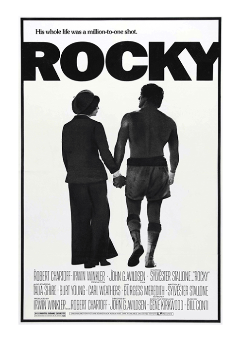
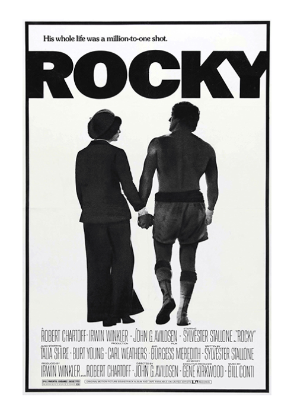

Peliculas favoritas
Batman

Rocky
Mision imposible

Como aficionado del cine, mi pasión se inclina hacia un amplio espectro de géneros, sin embargo, son las películas de acción, espionaje e históricas las que realmente capturan mi atención y me mantienen al borde del asiento. Disfruto sumergirme en intrincadas tramas llenas de adrenalina, escenas de combate emocionantes y momentos históricos fascinantes que me transportan a épocas pasadas. Aunque encuentro gran placer en la diversión y el alivio que ofrecen las comedias, no puedo resistir la tentación de sumergirme en el suspense ocasional de una buena película de terror. Para mí, cada género ofrece una experiencia única y emocionante que enriquece mi amor por el séptimo arte
Batman
Rocky
Mision imposible